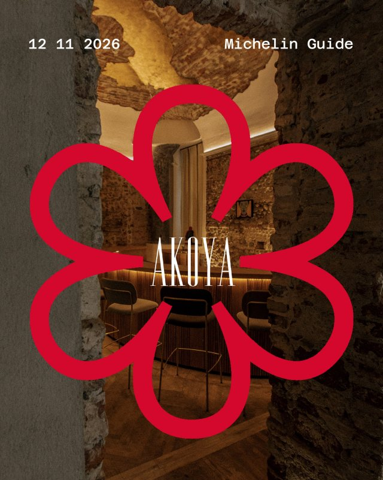
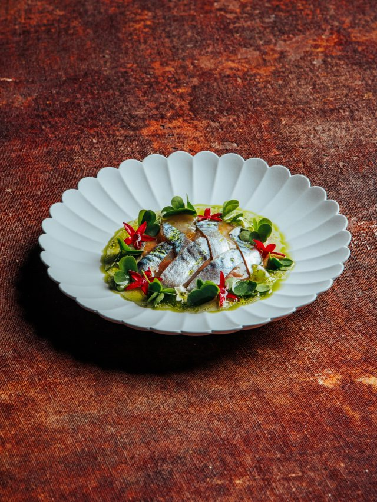
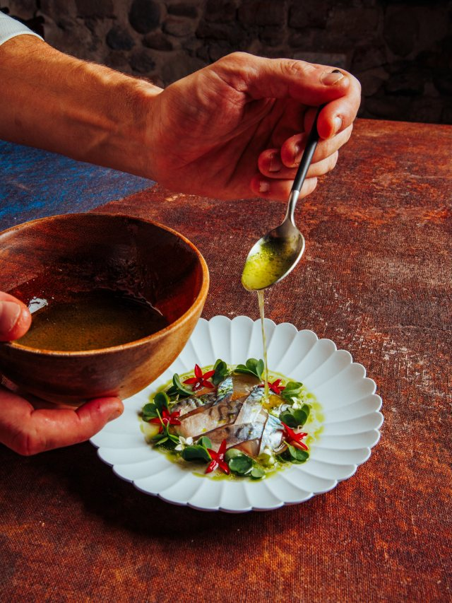
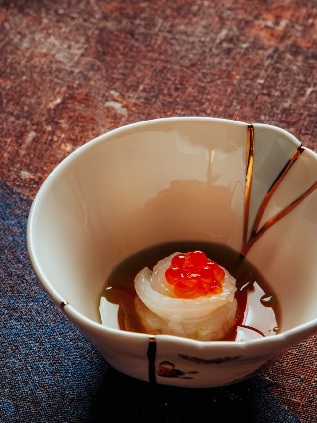
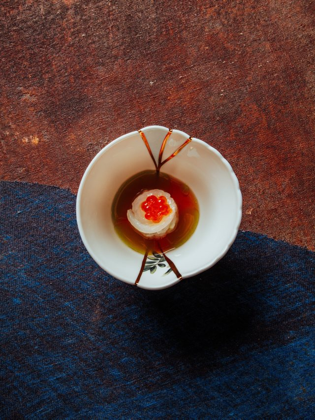
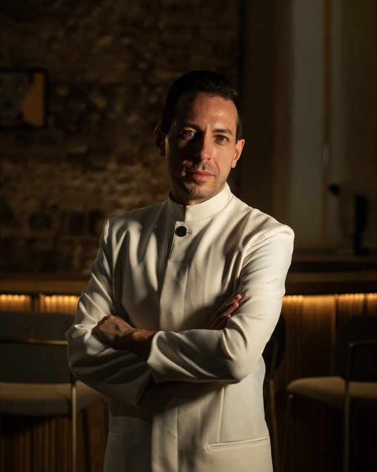
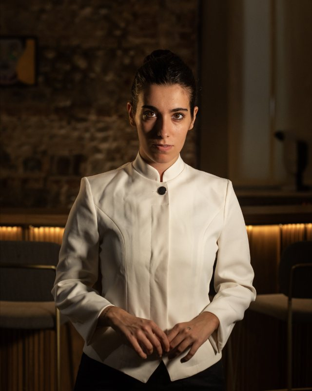

Dove vive la marca
Il sito di oggi è una pagina dentro quello della galleria Musa: logo di Musa, caratteri generici, due riquadri grigi. La marca di Akoya sta su Instagram.

Essenza
Quattro idee, ognuna con la frase loro da cui viene. proposta la sintesi a sinistra, loro le parole a destra.
Togliere finché resta l'essenziale
«Cosa resta quando si elimina il superfluo?»
«Presenza continua, interventi minimi, nessuna parola che non sia necessaria.»reel con chef Daddea; post sul servizio in sala
Giappone non adattato
«Non abbiamo adattato niente. Una cucina che abbiamo accolto senza chiederle di somigliarci.»post «Non abbiamo adattato niente»
La precisione come rispetto
«Il lusso è quasi sempre un'equazione di millimetri.»
«Dalla materia prima al piatto, ogni passaggio è una forma di rispetto.»post sull'hosomaki; reel sulla materia prima
Affidarsi
«Fiducia. Connessione. L'omakase per noi.»
«L'omakase non esiste senza chi sta dall'altra parte.»post «Fiducia»; annuncio della stella
Le loro frasi
Così scrivono dei piatti: prima un'idea, poi gli ingredienti. Frasi corte, punto fermo, nessun invito.
Un pesce che conosciamo bene, in una forma che non ci aspettiamo.Shime Saba, 11 11 2026
Il mare, in due consistenze.Calamaro Somen, 16 11 2026
La lama non taglia. Disegna.reel sul taglio
Il riso è il cuore del sushi.reel sul riso
Quello che sorprende è la misura.Shime Saba, 11 11 2026
Colori
Misurati sulle loro foto, non scelti a gusto. Il colore non sta nella grafica (bianco e nero) ma nei teli, nelle giacche, nella luce.
Caratteri
La scritta AKOYA è un bodoniano strettissimo: va usata com'è, come disegno, mai riscritta con un altro carattere. Per i nomi dei piatti tre prove sullo stesso testo. proposta la prima, che riprende il contrasto della scritta; la terza è quella della demo di oggi.
Shime Saba
Un pesce che conosciamo bene, in una forma che non ci aspettiamo.
Bodoni Moda12 11 2026 · Michelin GuideShime Saba
Un pesce che conosciamo bene, in una forma che non ci aspettiamo.
Oranienbaum12 11 2026 · Michelin GuideShime Saba
Un pesce che conosciamo bene, in una forma che non ci aspettiamo.
Shippori Mincho (demo di oggi)12 11 2026 · Michelin GuideI fatti piccoli (date, posti, orari) nel carattere da macchina che usano loro nella grafica della stella.
Fotografia
Una mano sola e riconoscibile. È il pezzo più forte della marca.






- Un piatto solo, su telo ruggine o indaco, mai su tovaglia bianca.
- Luce radente e calda da un lato, ombra piena dall'altro.
- Tre punti di vista: tre quarti, vicinissimo, dall'alto.
- La mano entra solo per il gesto: versare, tagliare, posare.
- Le persone: giacca avorio, sfondo di pietra, sguardo fermo.
Voce
Così
- Il mare, in due consistenze.
- Fiducia. Connessione.
- Il lavoro continua.
- Dal mercoledì alla domenica, dalle 18.
Così no
- Un viaggio di sapori indimenticabile
- Prenota ora la tua esperienza esclusiva
- Il dashi è versato davanti a voi
- Il miglior omakase di Torino